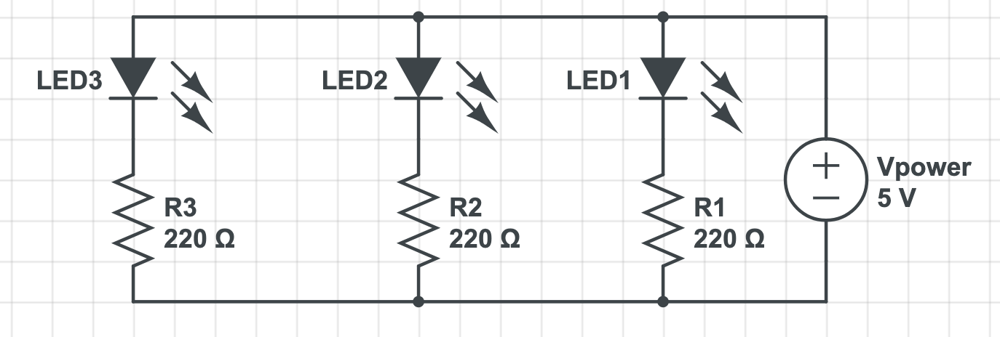

Schematic design
 Blink schematicSelecting the resistors
Why 220Ω? A calculation:
I decided to go with a parallel circuit design, which means having one resistor for each LED. For each red LED, the voltage drop is around 1.8V. The voltage of the power source is 5V.
As the voltage is the same across the parallel circuit, the voltage after crossing one LED is 5V - 1.8V = 3.2V.
Since the typical forward current of an LED is 20mA (0.02A), the minimum resistance of each resistor is Vr / Imin = 3.2V / 0.02A = 160Ω.
In order to find a resistor that is larger than 160Ω, but still as close to the number as possible, I decide to use three resistor that each has a resistance of 220Ω.
The code
A screenshot of the snippet in IDE/*
The code allows three red LEDs connected to pin 3, 4, and 5 to blink in sequence in the interval of 100ms.
This code snippet refers to the following source in the public domain:
http://www.arduino.cc/en/Tutorial/ForLoop
*/
// Create a timing interval that allows each LED to blink after each other in the seted time (ms)
int interval = 1000;
// Call the setup() method once to initialize each pin
void setup() {
// Initialize each pin as an output, starting from pin 3 to pin 6 (not including pin 6), through a for loop
for (int pinNum = 3; pinNum < 6; pinNum++) {
// Set the given pin number to output mode
pinMode(pinNum, OUTPUT);
}
}
// Call the forloop() method repetitively to make sure the three LEDs light up one after another
void loop() {
// Starting the loop from the pin with the lowest number (3), to the one with the highest number (5), lighting and dimming the LED from left to right
for (int pinNum = 3; pinNum < 6; pinNum++) {
// Turn the LED on by setting the output to high (starting from pin 3)
digitalWrite(pinNum, HIGH);
// Create a time delay of 1s (based on the set interval) between turning on and off the LED
delay(interval);
// Turn the LED off by setting the output to low (starting from pin 3)
digitalWrite(pinNum, LOW);
}
// Create a time delay of 1s (based on the set interval) between starting the next loop
delay(interval);
/// Starting the loop from the pin with the highest number (5), to the one with the lowest number (3), lighting and dimming the LED from right and left
for (int pinNum = 5; pinNum >= 3; pinNum--) {
// Turn the LED on by setting the output to high (starting from pin 5)
digitalWrite(pinNum, HIGH);
// Create a time delay of 1s (based on the set interval) between turning on and off the LED
delay(interval);
// Turn the LED off by setting the output to low (starting from pin 5)
digitalWrite(pinNum, LOW);
}
// Create a time delay of 1s (based on the set interval) between starting the next loop
delay(interval);
}
From schematic to circuit
The Arduino circuit: each LED is connected to a resistor to protect the LED from burning The circuit operating! Each light blinks one by one, with a stop of 1 second between them.
The circuit operating! Each light blinks one by one, with a stop of 1 second between them.